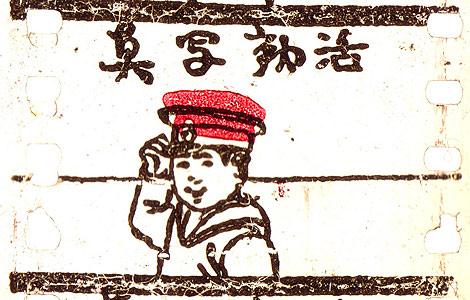

Los Orígenes
Los primeros pasos del anime se remontan a inicios del siglo XX, cuando Japón comenzó a experimentar con la animación como una nueva forma artística. Durante esta etapa, los animadores japoneses producían cortometrajes mudos influenciados por técnicas occidentales, especialmente de Estados Unidos y Europa, aunque también intentaban integrar estilos propios basados en el arte tradicional japonés. A pesar de las limitaciones tecnológicas, estos primeros trabajos sentaron las bases del anime como medio cultural, y durante la Segunda Guerra Mundial la animación también fue utilizada con fines propagandísticos, marcando un período donde el desarrollo artístico estuvo condicionado por el contexto histórico.